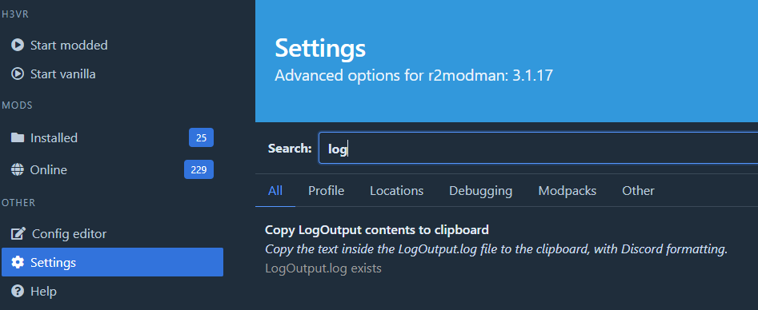
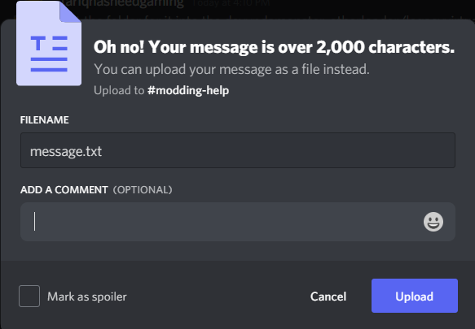

Your BepInEx log is a simple log that tells you what mods loaded, what mods are talking about, and if any errors occurred during setup. A window appears when you run the game that displays this log. You can use Sodalite's
Opening it for yourself
Opening it yourself is a good way to check to make sure everything loaded for troubleshooting purposes.
Open r2modman and go to the
Settingssection and open your profile folder by using the following button.
This button should have opened a folder. Inside this folder you will see the following files:
[profile folder]/ BepInEx/ doorstop_config.ini mods.yml winhttp.dllOpen the folder named
BepInEx.Inside of this folder you should see a file called
LogOutput.log. That is your log file. You can open it using any text editor, but Notepad is not recommended.
Sharing it over Discord
Sharing it over Discord is the main way to get help, and makes the people who answer who not hate you as much. Including the log in your problem message helps us more than you might think.
Go to the
Settingssection of r2modman or Thunderstore Mod Manager.Search for "log", and click on the 1 item in the list. This button copies soe text to your clipboard.

Paste (either by using
ctrl + vor by right clicking and clicking paste) into the channel you are sharing the log to.A message will appear asking you to upload a file instead. Click upload.
